透视学习 05——探索三点透视
这里说是“探索”，因为我想按照当前的心智模型放飞自我一下，先自己尝试看看能不能总结一些规律出来。我知道透视一书里是讲了三点透视的。
镜头滚转时不改变透视关系，这是一个很重要的规则，滚转能帮助我们简化问题。
首先，我们知道，三点透视和三点透视之间亦有不同——有一种伪的三点透视，它只在上下有两个消失点——对两点透视的方体，将镜头滚转 90 度就得到这样的结果。
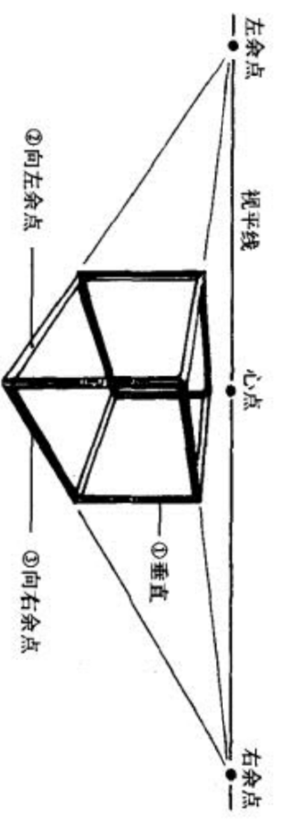
处理这个伪三点透视的底面。尝试思考——我尝试沿着最近的这根水平原线将这个面向上旋（可以尝试想象最近的这根原线不动，远离的那根原线向上抬升），旋转的度数和旋转后的面的灭线的关系是？
我们首先知道，旋转后的灭线，是平行于视平线的，因此这时候我们可以从侧面图着手去研究它，使用侧视图和之前使用俯视图是一样的效果——灭线被变成点了：
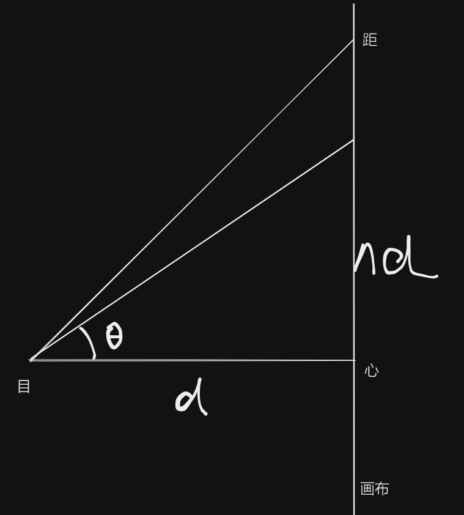
这个图熟悉不熟悉？和研究两点透视的余点是一样的：
实际的三维图如下：
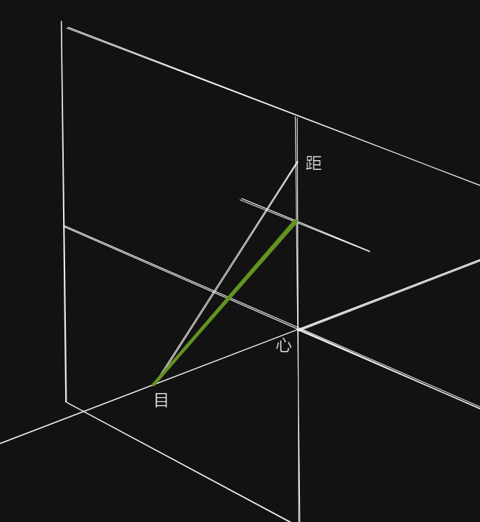
但处理这个好像没有任何意义。我们忘掉这个问题，重新出发。
任意灭线通过一个余点找另一个余点
我们从另一个更加具体的问题出发——我们任意画一条线，并规定它是一个矩形面的灭线，我们已知这个矩形面的一个余点，能否求，以及如何求另一个余点？
我们知道，灭线有 2x3 类——经心点的，不经心点的；以及垂直的，水平的，和其他的。
经心点的
先考虑经心点的。经心点的，水平的灭线，那实际上就是视平线，我们已经知道求法了。
那经心点，垂直的灭线呢？同样的求法，只不过原来我们考虑的是俯视图，现在我们考虑的是侧视图。
经心点，任意的灭线呢？这时候我们考虑的既非侧视图也非俯视图，而是从目-灭线的这个平面的法线方向去看，我们同样能得到同样的结果。但实际上这时候我们得调整目点的位置了。
另一种想法是，我们可以任意地滚转镜头到我们需要的角度——我们只需要滚转镜头直到这个灭线成为视平线，再使用视平线上的方法即可。
题外话，经心点的任意的灭线，一个示例是正视平躺三棱柱，它的侧面，这时候是一对变线一对原线，且变线指向心点。
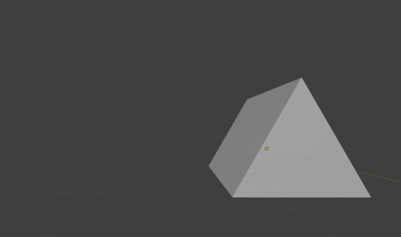
不正视这个平躺三棱柱，而是在水平方向上调整镜头的话，这时候就是不经心点的任意灭线了。如何仅通过思辩确认这一点？我们知道，这时候有两对变线，其中一对变线的灭点在视平线上且不是心点，另一对变线的灭点在天上，灭线必定为这两个灭点的连线，而且它必定不经心点。
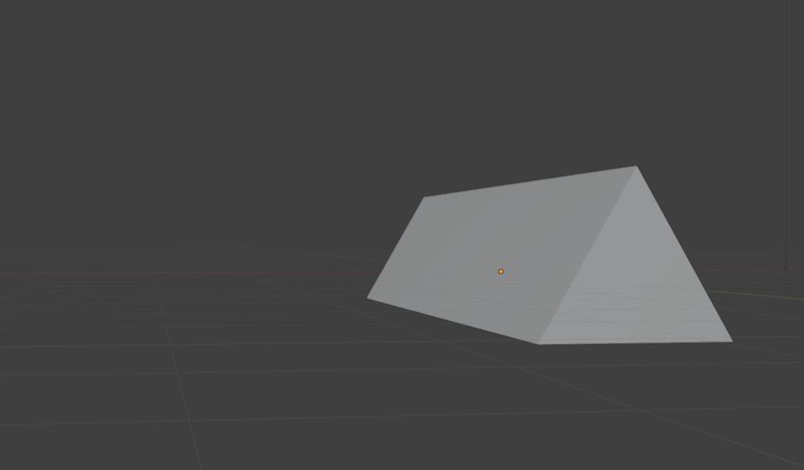
这证明，经心点的灭线，处理它的方式我们已经都学会了，现在问题是不经心点的灭线。
不经心点的
能够意识到，我们之前的一切都是在处理经心点的情况，两点透视时处理的是方体的顶面底面。
不经心点的灭线的话，知晓一个余点求另一个余点……欢迎来到立体几何的世界。直接画图吧。
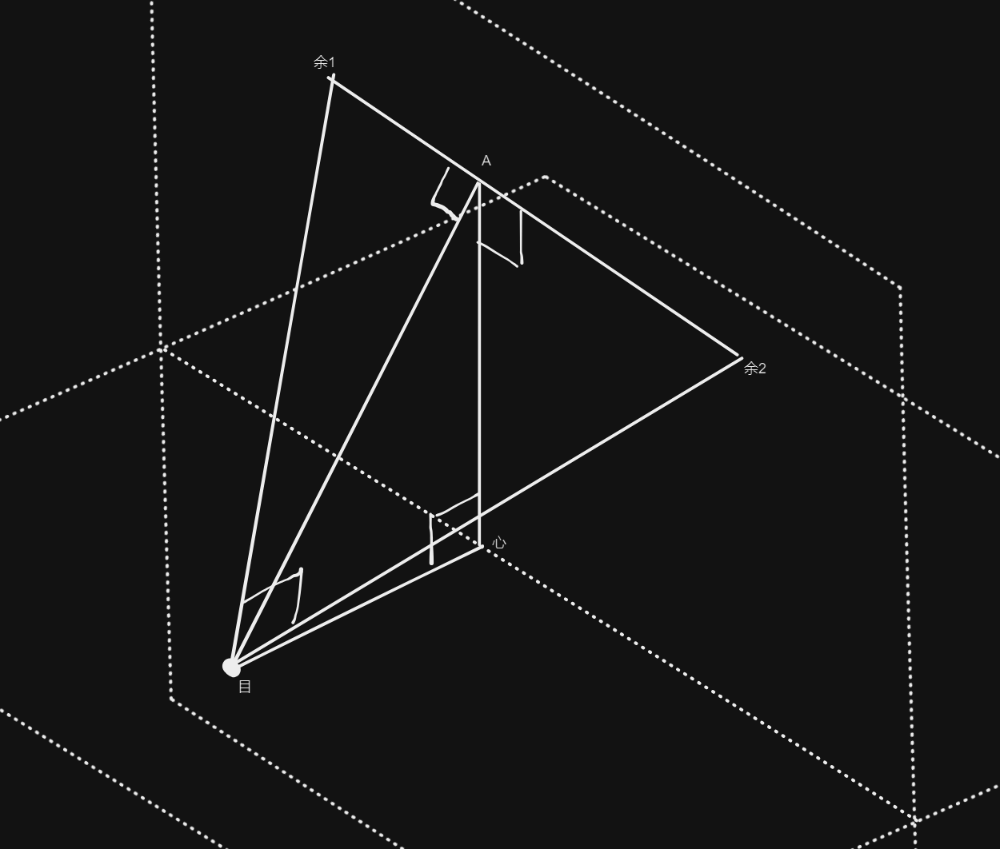
这有点小抽象，但我们要研究平面目-余 1-余 2的话，就必须要在灭线上找到距点，实际上，这就是灭线和 90 度视圈的交点，并非困难。
我们先令目心为 d，令心 A为 md，令 余 1-A 为 nd，余 2-A为 xd，则有：
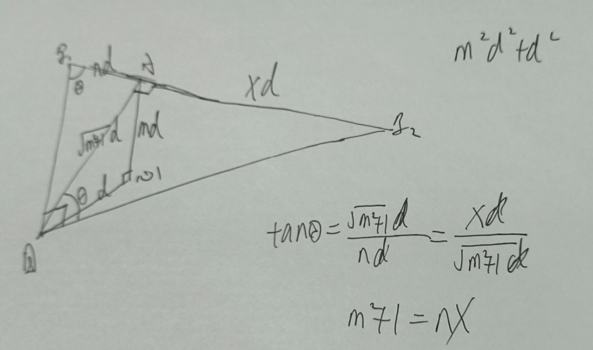
容易看到，这时候两个 余 A 的关系式里包含了 m，这证明，两余 A之间的距离关系被灭线和视平线的角度所影响……
虽然不敢相信但我有点害怕——不会每个不经心点的灭线都需要定一个辅助目点和辅助心点吧？？好像确实如此……要定一个新的目点，使得新的 d 为 $\sqrt{m^2+1}d$。书中有相应记载。实际上，这时候的辅助心点就是 A 点（或者说心点到灭线作垂线的交点），辅助目点就是沿 A 心做长度为 $\sqrt{m^2+1}d$ 的线段（也就是说沿这个垂线的反方向的方向）。但如果使用公式法的话，没必要做出辅助心点。
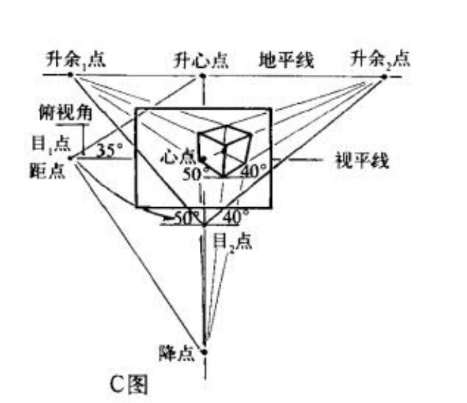
目 1 点的目的是为了得到长度 $\sqrt{m^2+1}d$，这个长度再“迁移”得到目 2，即我们的辅助目点，经过这个辅助目点就能继续像两点透视那样做操作了，也可以直接利用这个公式得到新的反比法。
非水平的情况
那非水平的情况呢？这个就不提了——总之滚转镜头嘛！
任意灭线的测点法
已经知道任意灭线的测点法也是使用新的目点和心点做操作，这里要得出新的公式。
还记得最初的测点法的证明吗？我们用的是俯视图的心智模型：
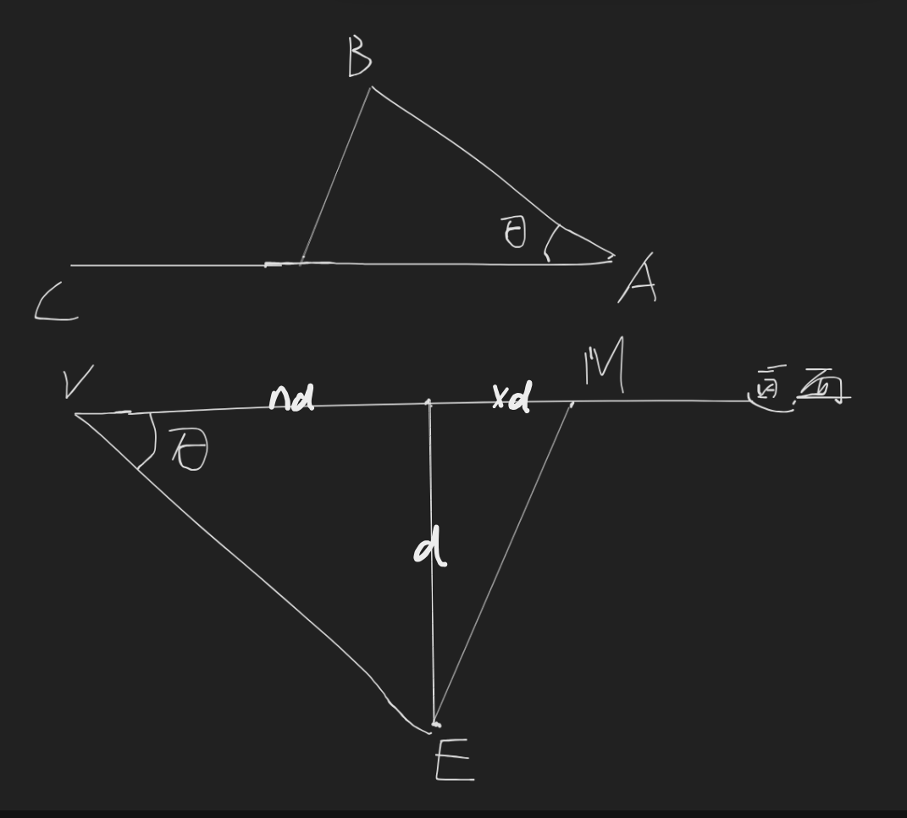
但现在我们不用俯视图了——现在心-灭线平面已经不是水平的了，我们得从心-灭线平面的法线方向上去看，而这时我们能得到完全一样的图像（这实际上也证明，使用新的目点、心点，测点法的作图步骤是没有改变的），只不过参数有一些变化：
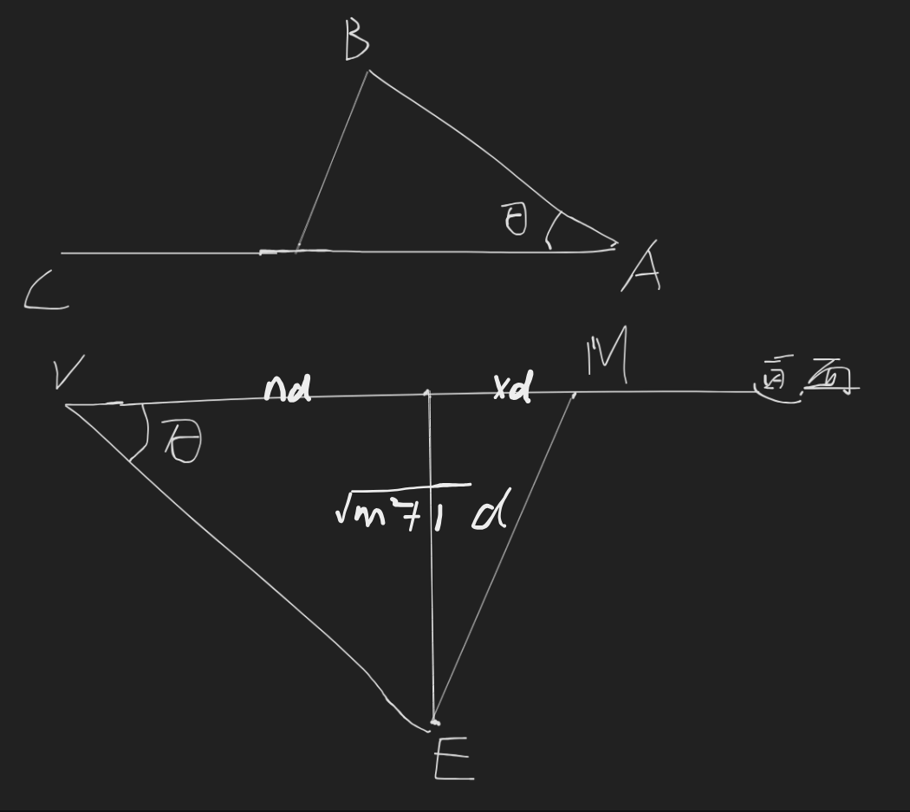
灭线找法线方向灭点
我们已经知道，共享一条灭线的所有平面是互相平行的，那么这些平面将共享同一条法线，法线一定也有自己的灭点，也就是说，一条灭线会对应法线方向上的一个灭点。
这个灭点在哪里呢？我们实际上已经知道了——考虑两点透视，我们知道立方体左右两余点和心点的距离是呈反比的，我们把其中一个余点做垂线，从而得到这个侧面的灭线，此时另一个余点就是这条灭线对应的法向灭点。
也就是说，要从一个灭线找法线方向上的灭点，只需要找灭线和心点的距离（实际上，是这个距离相对于心距的），然后求它的倒数，沿心点反方向做这个倒数的距离，就得到了法向灭点。注意到这里是一个 T 字形。
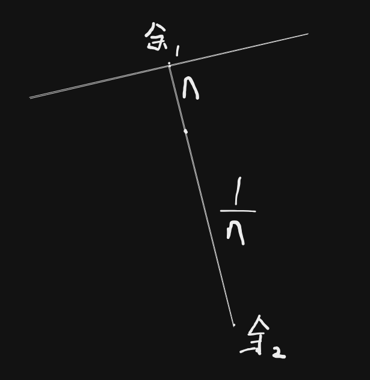
注意到——一个灭线和它的法向灭点，法向灭点向灭线作垂线必过心点。
对于一个真三点透视的立方体的三个灭点，任意一个灭点都是另两个灭点组成的灭线的法向灭点，我们反复考察 3 个灭点的话，就会发现，心点是这三个灭点组成的三角形的垂心。但这并没啥意义。
本博客所有文章除特别声明外，均采用 CC BY-NC-SA 4.0 协议 ，转载请注明出处！